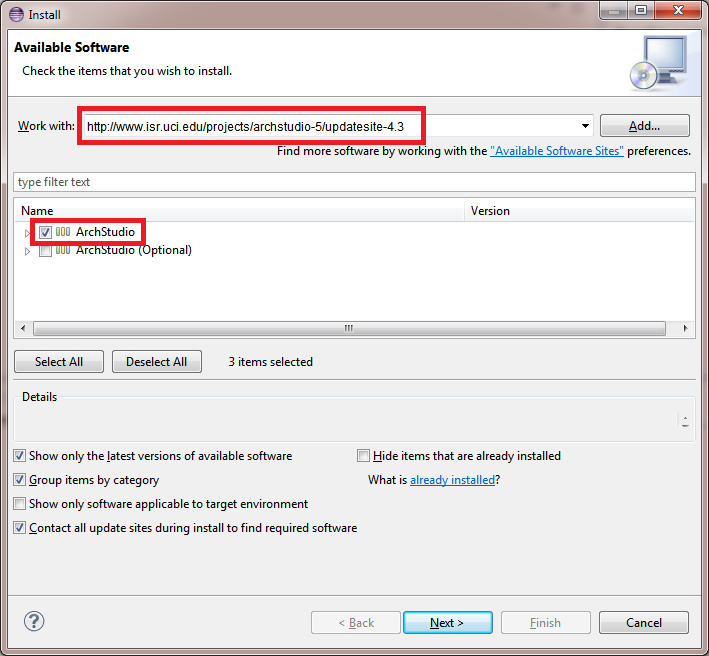
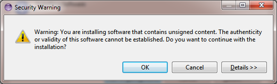

This document explains the procedures necessary to download and install ArchStudio. ArchStudio has three critical components:
ArchStudio also includes some binary distributions of software (e.g., JOGL) for the following operating systems:
If you already have Java 1.6 or Eclipse 4.2 (or better) installed, you may safely skip those parts of these instructions as they require no special configuration for ArchStudio.
ArchStudio (and Eclipse) are Java applications. ArchStudio is written for Java 2 Standard Edition version 6 (aka JDK1.6) or better. It will not run properly in any previous version of Java.
It is possible that you already have Java 6 installed on your machine. To check, start a command-prompt and run:
java -version
If the version reported is (1.)6.0 or better, skip to the next step. If not, you will need to obtain a version of Java for your target environment. In general, you can obtain such a release free of charge from Oracle at Java SE site. This is generally the path to pursue if you are running on Windows or Linux. Note that Oracle offers many Java 6 packages - nearly any should work, although we recommend the Java Development Kit (JDK) package.
MacOS X users can download a Java 6 development kit from Apple's Developer Site.
Linux users will want to investigate how Java is deployed on their
particular distribution of Linux. Many distributions are now offering
Java through their package repositories such as apt.
ArchStudio requires Eclipse 4.2 or better. If you already have Eclipse installed, you may install ArchStudio into your existing environment and can skip to the next step. Alternatively, you can simply duplicate your Eclipse directory or download and extract another copy to create a copy of Eclipse solely for running ArchStudio.
Download Eclipse 4.2 or better from the Eclipse downloads site. Eclipse's site should provide adequate documentation for expanding the archive and starting the Eclipse environment. Start Eclipse. It may ask you for a workspace location. This is the directory where Eclipse will store projects, including ArchStudio projects that contain xADL files. You may accept the default or choose a different directory. We recommend creating a new directory outside of Eclipse's install directory, since this makes it easier to upgrade Eclipse later without having to go through extra trouble to migrate your workspace to the new version.
Once Eclipse is running, it may show the Welcome view if this is the first time it has been run. Close the Welcome view and the Java development perspective should be displayed. Once Eclipse is running, you are ready to install ArchStudio.
This following steps walk you through the install of ArchStudio. Note that you must be connected to the Internet for this to work.
|  |
To install ArchStudio perform the following steps:
Wait for Eclipse to download ArchStudio, this may take several minutes. |
|  | Eventually, a security warning will appear, as shown on the left. Click on OK. When prompted to restart Eclipse, click Yes. |
Once ArchStudio is installed, proceed to the getting started with an architecture.
Updates to ArchStudio are also deployed through the ArchStudio update site and are available through Eclipse's plug-in update mechanisms. To perform an update, do the following:
{kind=link}
{kind=link}